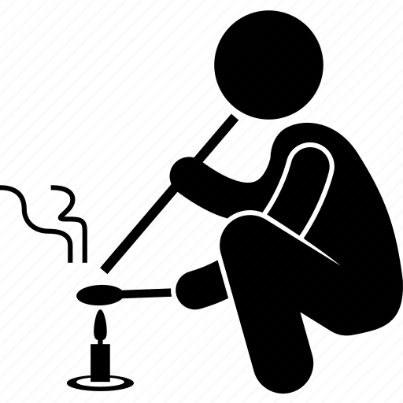
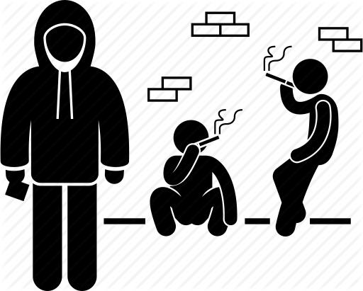
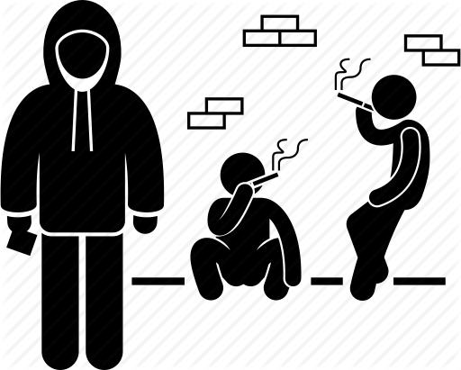

What is Substance use?
The use of illegal drugs, prescription or over-the-counter medications, or alcohol for purposes other than those for which they were prescribed or in large quantities. Substance habit can result in social, physical, emotional and occupational issues.
Did you know?
60% of poor work performance can be tied back to drugs or alcohol.
50% of all suicides, and over 50% of all violent crimes, are caused by alcohol and/or drugs.
 

Statistics
Cigar: 17.3 million adults(28% of the population).
Alcohol: 85.6 percent of people ages 18 and older reported that they drank alcohol at some point in their lifetime.
Drugs: it is estimated that there are 1.8 million drug users in the Philippines, which is equivalent to 2.2 percent of the population.
SUD
SUD: A substance use disorder(SUD) is a mental disorder that affects a person's brain and behavior, leading to a person's inability to control their use of substances such as illegal drugs, alcohol, or medications.
Symptoms can range from moderate to severe, with addiction being the most severe form of SUD.
Possible mental Impacts:
• Depression
• Anxiety
• Paranoia
Physical Impacts:
• Kidney Failure
• Cardiovascular Issues
• Lung Disease
• Liver Problems
• Brain Damages
Behavioral Effects:
Taking a substance in higher doses or for longer than intended.
Other behavioral changes common to individuals struggling with addition include:
Lying to friends/family members.
Becoming more secretive and/or suspicious.
Changing friend Groups
Getting into legal trouble
Going into debt/spending money exorbitantly
Wanting to quit using but being unable to. Spending a lot of time trying to get, use, or recover from the substance. Craving to fulfill school, home, or work obligations because of substance use. Continuing to use the substance despite reccuring or persistent social or interpersonal problems related to use. Reducing or stopping important social, recreational or occupational activites due to substance use. Recurrent substance use in physically dangerous situations. Consistent substance use despite knowing knowledge that it is causing or worsening psychological or physical problems.
Short Term Effects:
Increased attention and decreased fatigue
Increased activity and wakefulness
Euphoria and rush
Increased respiration
Rapid/irregular heartbeat
Hyperthermia